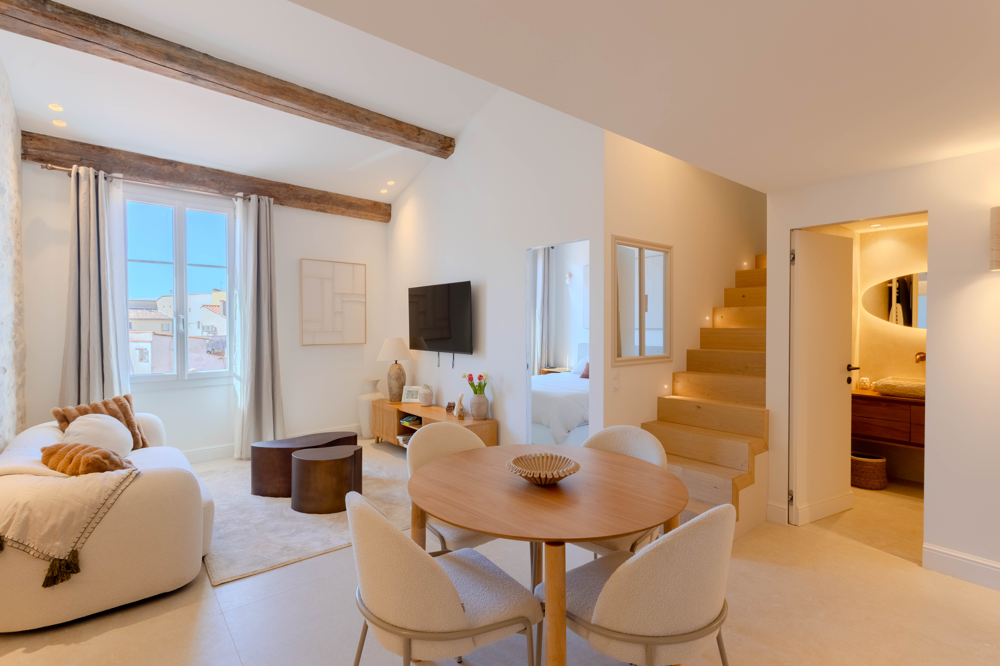

Réalisation livrée · 2025
25 rue Sade — Appartement Sud
25 rue Sade · Vieil Antibes — Place Nationale
Au cœur de la Place Nationale, cet appartement s'inscrit dans la réhabilitation soignée d'un immeuble de caractère du Vieil Antibes. Le projet a été pensé dans une logique de valorisation patrimoniale, en optimisant les volumes existants tout en préservant l'âme et les éléments architecturaux d'origine. Les combles ont été aménagés afin de créer des espaces lumineux et chaleureux, mêlant charme de l'ancien et confort contemporain. Deux T3 ont été entièrement rénovés et vendus avant même l'achèvement des travaux, témoignant de l'attractivité et du caractère unique de cette adresse.
Surface
105 m²
Programme
2 T3 livrés
Livraison
2025
Place Nationale
Précommercialisé
Combles aménagés